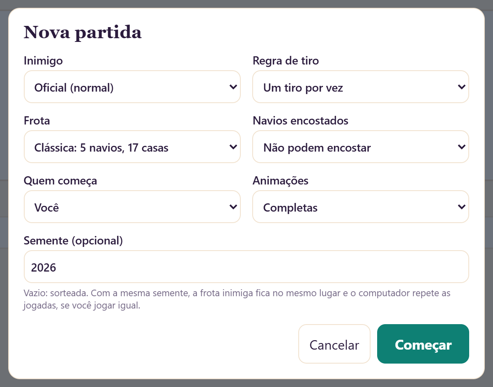
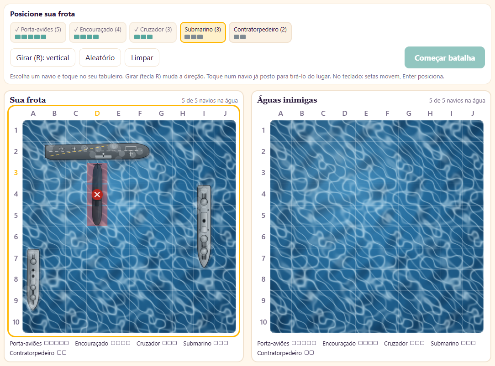
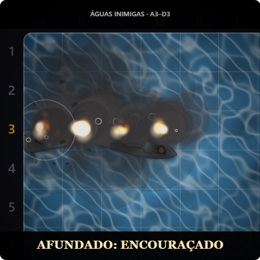
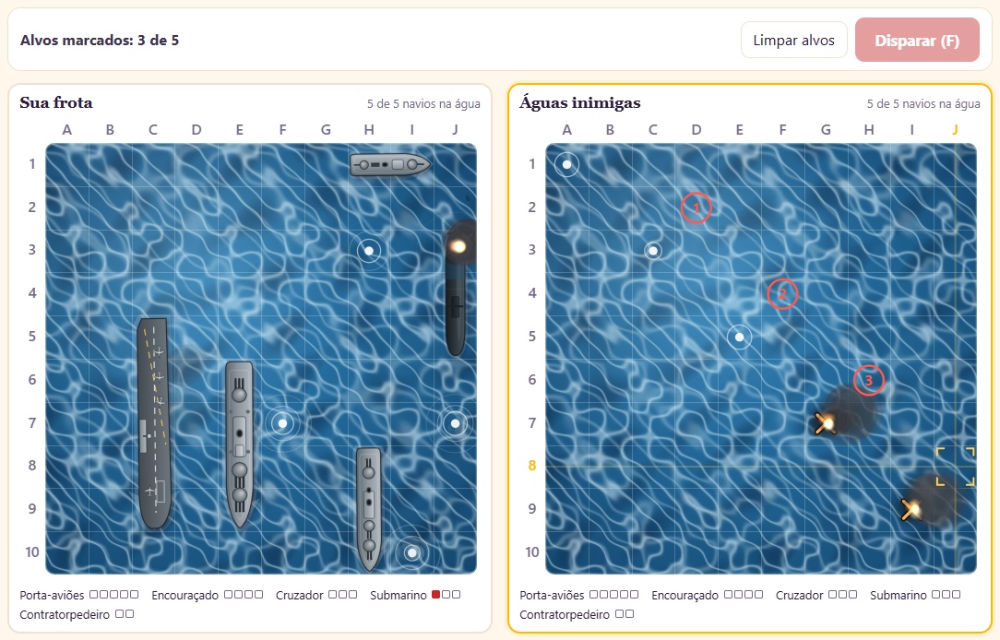
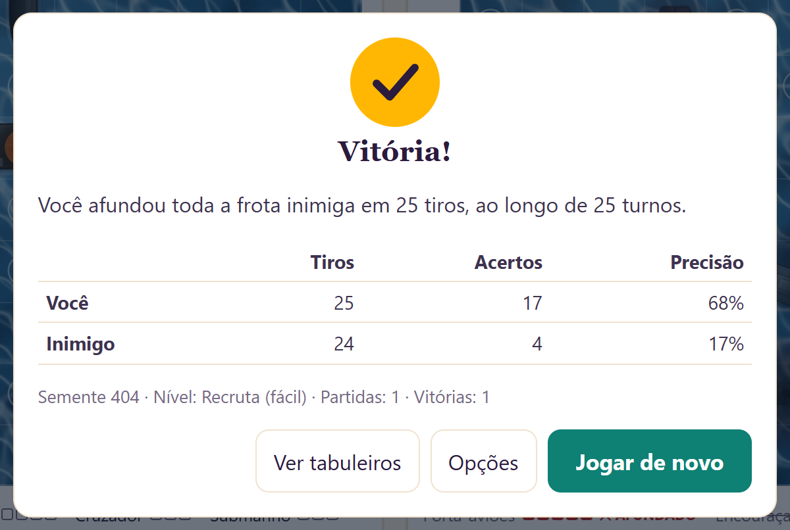
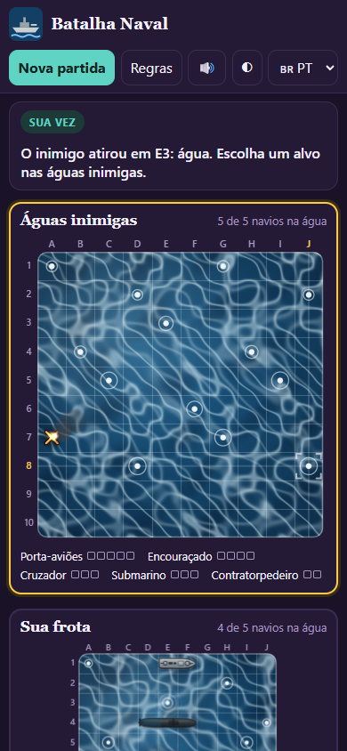
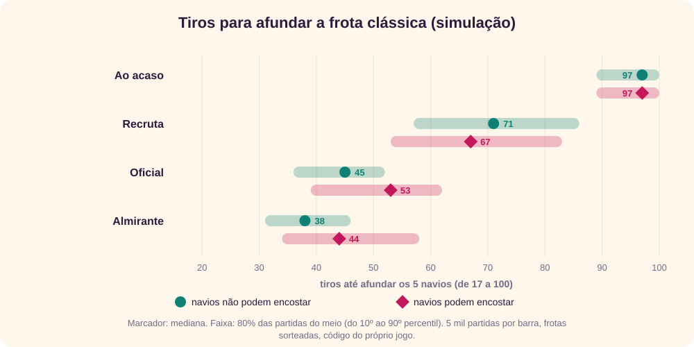

O jogo
Na Batalha Naval, cada jogador esconde uma frota num mar quadriculado e tenta afundar a frota do outro sem vê-la. Na sua vez, você diz uma casa, como “E7”, e o adversário responde se foi água ou acerto. Quando todas as casas de um navio são atingidas, ele afunda. Ganha quem afundar primeiro toda a frota adversária.
O começo é pura sorte: o mar está vazio de informação. Depois do primeiro acerto, o jogo vira raciocínio. Onde o resto desse navio pode estar? Que navios ainda faltam, e onde eles ainda cabem?
O app deste site joga Batalha Naval contra o computador, com três níveis de adversário, três regras de tiro e duas frotas. [1] É um único arquivo HTML, que funciona sem internet e em quatro idiomas, com mar animado, tiros, explosões, incêndios e naufrágios.
![Tela do jogo no meio da batalha. À esquerda, Sua frota: porta-aviões na linha 2 com dois acertos e fumaça, encouraçado partido ao meio e cruzador emborcado, com o fundo vermelho à mostra, submarino e contratorpedeiro intactos, e círculos brancos onde o inimigo errou. À direita, Águas inimigas: vários círculos brancos de água, três cruzes de acerto com fogo e os restos de um contratorpedeiro inimigo afundado em H10 e I10. Acima, a etiqueta Sua vez e o aviso O inimigo atirou em F2 e acertou seu Porta-aviões](rc_images/NavalBatalha.png)
Uma breve história
Lápis e papel
A Batalha Naval nasceu como jogo de lápis e papel. A Wikipédia em inglês diz que ele é conhecido no mundo todo como um jogo da época da Primeira Guerra Mundial. Segundo a mesma página, oficiais russos já o jogavam antes dessa guerra, e o poeta russo Ryurik Ivnev mencionou o jogo em seu diário em 1907. A página também cita semelhanças com o Basilinda, um jogo de 1890 de E. I. Horsman. [2]
Blocos impressos e pinos de plástico
A primeira versão comercial, segundo a Wikipédia em inglês, foi o Salvo, publicado em 1931 nos Estados Unidos pela Starex. Nos anos 1930 e 1940 vieram outros blocos de papel já impressos, entre eles o Broadsides, da Milton Bradley. Em 1967, a Milton Bradley lançou a versão com tabuleiros de pinos e navios de plástico em miniatura, e em 1977 uma versão eletrônica. [2]
A frota das regras da Milton Bradley de 1990 é a que o app usa como clássica: porta-aviões (5 casas), encouraçado (4), cruzador (3), submarino (3) e contratorpedeiro (2). Numa revisão de 2002, a Hasbro trocou o cruzador por um contratorpedeiro de 3 casas e criou um barco-patrulha de 2. [2]
Em português
A Wikipédia em português descreve navios diferentes: porta-aviões com 5 casas, navios-tanque com 4, contratorpedeiros com 3 e submarinos com 2. Numa das variações, num tabuleiro de 10 por 10, há 1, 2, 3 e 4 navios de cada tipo. [3]
↑ Voltar ao topoDivergências nas fontes. A Wikipédia em português diz que o jogo foi publicado pela primeira vez pela Milton Bradley, em 1931. [3] A Wikipédia em inglês atribui a primeira versão comercial, de 1931, à Starex, com o nome Salvo, e coloca a Milton Bradley nos anos 1930 e 1940 com o Broadsides e em 1967 com a versão de plástico. [2] A página em português é curta e marcada pela própria Wikipédia como sem fontes para todo o conteúdo. Nenhuma das duas páginas diz se os navios podem encostar uns nos outros.
As regras
O mar e a frota
Cada jogador tem um mar de 10 por 10 casas. As colunas vão de A a J e as linhas de 1 a 10, e cada casa tem um nome, como B5 ou J10. Os navios ficam em linha reta, na horizontal ou na vertical, nunca na diagonal e nunca um sobre o outro. [2]
| Navio | Casas | Frota clássica | Frota grande |
|---|---|---|---|
| Porta-aviões | 5 | 1 | 1 |
| Encouraçado | 4 | 1 | 1 |
| Cruzador | 3 | 1 | 2 |
| Submarino | 3 | 1 | 2 |
| Contratorpedeiro | 2 | 1 | 3 |
| Total | 5 navios, 17 casas | 9 navios, 27 casas |
A frota grande é uma opção do app, para partidas mais longas; não vem de nenhuma das fontes.
![À esquerda, um tabuleiro de 10 por 10 com colunas de A a J e linhas de 1 a 10. Há um porta-aviões na linha 2, de B a F, um encouraçado na coluna I, de 4 a 7, e um cruzador na coluna C, de 6 a 8. A casa E7 está destacada, com linhas tracejadas vindas da coluna E e da linha 7; nela há um tiro na água marcado por um círculo branco, e em I5 um acerto marcado por uma cruz. À direita, três exemplos da regra padrão do app: navios com uma casa livre entre eles podem; encostando pela diagonal não podem; lado a lado não podem. Com a opção Podem encostar, as três posições valem.](rc_images/NavalGrade.svg)
Encostar ou não
As fontes só proíbem sobrepor navios e colocá-los na diagonal. O artigo de Nick Berry lembra que nada nas regras diz que eles não podem se encostar. [4] O app oferece as duas formas. O padrão é não podem encostar, nem pela diagonal, porque assim cada água e cada navio afundado dá mais informação, e a caça fica mais interessante. Escolha Podem encostar para jogar como nas regras impressas.
A vez
- Na sua vez, escolha uma casa das águas inimigas que ainda não recebeu tiro.
- O adversário responde água ou acerto. No app, água é um círculo branco; acerto é uma cruz com fogo.
- Quando todas as casas de um navio são atingidas, o adversário anuncia qual navio afundou. No app, o nome aparece no aviso, o casco aparece escuro no tabuleiro e o navio é riscado na lista.
- A vez passa para o outro lado, a não ser que a regra de tiro diga outra coisa.
Regras de tiro
| Regra no app | Como funciona |
|---|---|
| Um tiro por vez | cada lado dá um tiro e passa a vez. |
| Acertou, atira de novo | a vez continua enquanto você acertar. |
| Salva | você marca, de uma vez, um tiro para cada navio seu ainda na água, e eles caem juntos. Quem perde navios perde tiros. As regras modernas da Milton Bradley trazem essa forma de salva para jogadores mais experientes. [2] |
Passo a passo no app
1. Escolha as opções
Ao abrir o jogo, aparece a janela Nova partida. Para a primeira partida, use o inimigo Oficial, um tiro por vez, frota clássica e navios sem encostar. Deixe a semente vazia para o app sortear, ou digite um número para repetir uma partida. Clique em Começar.

| Opção | O que faz |
|---|---|
| Inimigo | Recruta, Oficial ou Almirante (veja Estratégias). |
| Regra de tiro | um tiro por vez, acertou e atira de novo, ou salva. |
| Frota | clássica, com 5 navios, ou grande, com 9. |
| Navios encostados | não podem encostar (padrão) ou podem encostar. Vale para as duas frotas. |
| Quem começa | você, o inimigo ou sorteio. |
| Animações | completas, rápidas ou desligadas. Com animações desligadas, os tiros caem na hora. |
| Semente | com a mesma semente, a frota inimiga fica no mesmo lugar e o computador repete as jogadas, se você jogar igual. |
2. Posicione a sua frota
A barra Posicione sua frota lista os navios. O primeiro já vem escolhido: passe o mouse sobre o seu tabuleiro e o navio aparece no lugar, com fundo verde e ✓ se couber, ou vermelho e ✕ se não couber. Clique para posicionar, e o próximo navio é escolhido sozinho. Girar, ou a tecla R, troca entre horizontal e vertical.

Errou? Clique num navio já posto para tirá-lo do lugar, ou no nome dele na barra. Aleatório posiciona a frota inteira e Limpar tira todos. Com a frota completa, clique em Começar batalha. No teclado: Tab até o tabuleiro, setas para mover, Enter para posicionar, R para girar.
3. Atire
Na sua vez, o quadro Águas inimigas fica com borda dourada e a etiqueta diz Sua vez. Passe o mouse sobre o mar: uma mira marca a casa, e a coluna e a linha ficam destacadas nos rótulos. Clique para atirar. Um dos seus navios dispara, o projétil voa em arco e cai.
Na água, sobe uma coluna de espuma e fica um círculo branco. No acerto, fica uma cruz, e o fogo e a fumaça continuam saindo da casa. Na sua frota, os acertos do inimigo aparecem como buracos queimados no casco. Embaixo de cada tabuleiro, a lista mostra os navios que restam, e o Diário de bordo registra todos os tiros.
4. Assista ao naufrágio
Quando um navio afunda, seu ou do inimigo, a partida para por alguns segundos para uma cena de cinema. A câmera se aproxima do navio, faixas pretas aparecem em cima e embaixo do tabuleiro com o nome do navio e as casas que ele ocupava, e o resto da tela escurece. Cada tipo de navio afunda de um jeito:

| Navio | Como afunda no app |
|---|---|
| Porta-aviões | explosões em cadeia ao longo do convés; os aviões escorregam para o mar; o navio aderna e afunda pela popa. |
| Encouraçado | o paiol explode, com clarão e câmera lenta; o casco parte em dois pedaços que se afastam. |
| Cruzador | duas explosões, depois o navio aderna, emborca mostrando o fundo vermelho e afunda. |
| Submarino | mergulha de proa soltando bolhas e implode, com uma coluna de espuma e uma mancha de óleo maior. |
| Contratorpedeiro | uma explosão quebra a quilha no meio, e o navio dobra em V antes de afundar. |
Os restos ficam no tabuleiro: pedaços partidos, casco virado ou só a sombra do submarino. Com Animações rápidas, a cena dura metade do tempo e a câmera se aproxima menos; com Desligadas, não há cena. Se o sistema pede menos movimento, a cena fica curta e sem zoom, câmera lenta ou tremor.
5. Experimente a salva
Com a regra Salva, você marca vários alvos antes de atirar. Cada alvo ganha um círculo vermelho numerado, e a barra mostra quantos já foram marcados. Toque num alvo de novo para desmarcá-lo. Com todos marcados, clique em Disparar, ou aperte F, e os tiros caem juntos.

6. Fim da partida
Quando uma frota inteira afunda, a janela de fim mostra o resultado, os tiros, os acertos e a precisão de cada lado, a semente e o seu placar de partidas. Os navios inimigos que sobraram aparecem no tabuleiro com contorno tracejado. Ver tabuleiros fecha a janela para você conferir; Jogar de novo começa outra partida com as mesmas opções.

7. No celular
No celular, os tabuleiros ficam um sobre o outro. Durante a batalha, as águas inimigas vêm primeiro e a sua frota fica menor, logo abaixo. Para ver os tiros do inimigo chegando, role até ela. O botão ◐ troca entre os temas claro e escuro, 🔊 liga e desliga o som e o seletor ao lado troca o idioma.

O que os números dizem
Quantos tiros são precisos para afundar a frota clássica? Para responder, rodei o código de tiro do próprio jogo, tirado do arquivo do app, contra frotas sorteadas pelo mesmo código, 5 mil partidas por configuração. Cada partida conta os tiros até o último navio afundar. [1]

| Quem atira | Sem encostar: mediana (10%–90%) | Encostados: mediana (10%–90%) |
|---|---|---|
| Ao acaso, sem nenhuma lógica | 97 (89–100) | 97 (89–100) |
| Recruta | 71 (57–86) | 67 (53–83) |
| Oficial | 45 (36–52) | 53 (39–62) |
| Almirante | 38 (31–46) | 44 (34–58) |
O que dá para tirar daí:
- Atirar ao acaso é quase varrer o mar. Na metade das partidas, foram precisos 97 tiros ou mais de 100 possíveis, porque o último navio costuma estar nas últimas casas que sobram.
- Seguir o navio depois do acerto é o que mais rende. O Recruta só faz isso em parte das vezes; o Oficial faz sempre e precisa de 26 tiros a menos que ele, na mediana, com navios sem encostar.
- A regra de encostar muda o jogo. Quando os navios não se encostam, a água em volta de um navio afundado e as diagonais de cada acerto ficam livres de navio, e os níveis Oficial e Almirante deixam de atirar ali. Com navios encostados, essa informação some, e eles precisam de 8 e 6 tiros a mais.
- O nível pesa na disputa. Comparando os tiros de cada lado em 5 mil duelos, com um tiro por vez e quem começa alternando, o Almirante venceu o Oficial em 75% das partidas e o Oficial venceu o Recruta em 99%.
Comparando com outra análise
Em 2011, Nick Berry simulou 100 milhões de partidas para cada estratégia, com a frota clássica e navios podendo se encostar. Ele encontrou mediana de 96 tiros ao acaso (97, em outro trecho do mesmo artigo), 64 para procurar em xadrez e caçar depois do acerto, e 42 para o mapa de probabilidade, que é a ideia do Almirante. [4] Com navios encostados, as medianas do app foram 97, 53 e 44. As duas análises batem no tiro ao acaso e no mapa de probabilidade. A caça em xadrez do Oficial precisou de 11 tiros a menos que a do artigo; o artigo não detalha a estratégia o bastante para dizer de onde vem a diferença.
↑ Voltar ao topoO que estes números não medem. A simulação é um modelo: o computador atirando contra frotas sorteadas ao acaso. Pessoas não posicionam navios ao acaso, e nem todas jogam como os três níveis do app. Os números servem para comparar estratégias, não para prever uma partida entre duas pessoas.
Estratégias
Procure em xadrez, cace depois do acerto

- Procure em xadrez. O menor navio tem 2 casas, então sempre ocupa uma casa “preta” e uma “branca” do xadrez. Atirando só numa das cores, você encontra todos os navios gastando no máximo metade do mar. [4] Quando o contratorpedeiro afunda e o menor navio que resta tem 3 casas, dá para espaçar ainda mais os tiros.
- Depois de um acerto, teste as quatro vizinhas. O resto do navio está acima, abaixo, à esquerda ou à direita. Se os navios não podem encostar, as quatro diagonais do acerto ficam vazias: não gaste tiro nelas.
- Com dois acertos em linha, siga a linha. A direção está decidida. Atire numa ponta até dar água, depois na outra, até o navio afundar.
- Depois do naufrágio, risque a vizinhança. Sem navios encostados, todas as casas em volta do navio afundado são água.
Pense em onde os navios cabem
O Almirante vai além: para cada navio que ainda falta, conta todas as posições em que ele cabe sem passar por águas ou navios afundados, e soma essas posições em cada casa. Depois de um acerto, as posições que passam por ele valem 41 vezes mais. O tiro vai na casa com o maior número. [1]
Você não precisa fazer essa conta de cabeça. A ideia prática é: no começo, prefira o meio do mar, onde cabem mais navios; e repare em espaços estreitos entre águas, onde o navio que falta já não cabe.
Onde esconder a sua frota
Como o centro é onde cabem mais posições, o Almirante atira primeiro nele. A simulação mediu o efeito: com a frota toda colada nas bordas, o Almirante precisou de 48 tiros em vez de 38, na mediana, sem navios encostados. Contra o Oficial, que procura em xadrez sem preferir o centro, a diferença foi pequena: 47 em vez de 45. [1]
Isso vale contra o computador, que não aprende com você. Uma pessoa que perceba que você sempre usa as bordas vai começar por elas. Contra gente, varie.
Na salva
Na salva, espalhe os tiros pelo xadrez em vez de juntá-los: cinco tiros vizinhos cobrem pouco mar. Quando acertar, use parte da próxima salva nas vizinhas do acerto e o resto continuando a busca. E lembre que cada navio perdido é um tiro a menos por vez: proteger a frota vale tanto quanto atacar.
↑ Voltar ao topoErros comuns
“Atirar em casas coladas umas nas outras é mais seguro.”
Não. Na busca, tiros vizinhos repetem informação. O xadrez cobre o mar inteiro com metade dos tiros.
“Acertei, então atiro em volta, inclusive nas diagonais.”
Navio não fica na diagonal. Depois de um acerto, só as quatro vizinhas de lado interessam, e, sem navios encostados, as diagonais são água com certeza.
“Dois acertos lado a lado são do mesmo navio.”
Quase sempre, mas não sempre, quando os navios podem encostar. Se a linha passar do tamanho do maior navio que resta, ou se um navio afundar com acertos sobrando, há dois navios ali.
“Os cantos são o melhor esconderijo.”
Contra o Almirante, as bordas ajudam: 48 tiros em vez de 38 na simulação. Mas um adversário que conhece o truque vai procurar ali primeiro.
“Com a mesma semente, a partida é sempre igual.”
Só se você jogar igual. A semente fixa a frota inimiga e o sorteio do computador, mas as jogadas dele dependem das suas.
Variações
A Wikipédia em inglês lista várias variações. [2] Algumas estão no app; outras, só no papel.
| Variação | Como funciona | No app |
|---|---|---|
| Salva pelos navios na água | um tiro por navio que ainda não afundou. | sim, regra Salva. |
| Salva fixa | cinco tiros por vez durante toda a partida. | não. |
| Salva pelo maior navio | tantos tiros quanto o tamanho do maior navio ainda sem avaria. | não. |
| Salva com total | o adversário só diz quantos acertos e águas houve na salva, sem dizer quais. | não. |
| Naufrágio em segredo | quem perde um navio não precisa anunciar. | não; o app sempre anuncia. |
| Navio que se move | a cada quatro ou cinco jogadas, um navio pode mudar para casas que ainda não receberam tiro. | não. |
| Frota da Hasbro de 2002 | contratorpedeiro de 3 casas e barco-patrulha de 2 no lugar do cruzador. | não; o tamanho é o mesmo da frota clássica. |
| Frota da Wikipédia em português | porta-aviões (5), navios-tanque (4), contratorpedeiros (3) e submarinos (2), com 1, 2, 3 e 4 de cada. [3] | não. |
| Acertou, atira de novo | a vez continua enquanto houver acerto. | sim; esta não está nas fontes consultadas. |
Revisão rápida
1. Quantas casas ocupa a frota clássica?
17: porta-aviões 5, encouraçado 4, cruzador 3, submarino 3 e contratorpedeiro 2.
2. Por que procurar em xadrez funciona?
Porque o menor navio tem 2 casas e sempre cobre uma casa de cada cor. Atirando numa cor só, nenhum navio escapa.
3. Depois de um acerto, sem navios encostados, onde não vale a pena atirar?
Nas quatro diagonais do acerto: ali não pode haver navio.
4. Na salva, quantos tiros você tem?
Um para cada navio seu que ainda não afundou.
5. Na simulação, quantos tiros o Almirante precisou, na mediana, sem navios encostados?
38, contra 97 de quem atira ao acaso.
6. Por que o Oficial e o Almirante precisam de mais tiros quando os navios podem encostar?
Porque deixam de saber que a vizinhança dos navios afundados e as diagonais dos acertos são água.
7. Qual foi a primeira versão comercial do jogo?
Segundo a Wikipédia em inglês, o Salvo, da Starex, em 1931. A Wikipédia em português atribui a primeira publicação à Milton Bradley, no mesmo ano.
8. Colar a frota nas bordas ajuda?
Contra o Almirante, sim: 48 tiros em vez de 38 na simulação. Contra uma pessoa que perceba o padrão, pode atrapalhar.
Referências
- Giovani Perotto Mesquita, “Batalha Naval”, jogo deste site, giovanipm.github.io/BatalhaNaval.html. A lógica dos três níveis e o peso 41 do mapa do Almirante estão no código do jogo. As simulações deste tutorial rodam esse mesmo código, extraído do arquivo, com 5 mil partidas por configuração e frotas sorteadas; os mapas de probabilidade também vêm dele.
- Wikipedia, “Battleship (game)”, revisão 1380869816, acesso em 14/11/2026, en.wikipedia.org/wiki/Battleship_(game).
- Wikipédia, “Batalha naval (jogo)”, editada em 1º/04/2024, acesso em 14/11/2026, pt.wikipedia.org/wiki/Batalha_naval_(jogo). Página curta, marcada pela própria Wikipédia como sem fontes para todo o conteúdo.
- Nick Berry, “Battleship”, DataGenetics, 29/12/2011, acesso em 14/11/2026, datagenetics.com/blog/december32011.

![On the left, a 10 by 10 board with columns A to J and rows 1 to 10. There is an aircraft carrier on row 2 from B to F, a battleship on column I from 4 to 7 and a cruiser on column C from 6 to 8. Square E7 is highlighted, with dashed lines coming from column E and row 7; it holds a miss, marked by a white circle, and I5 holds a hit, marked by a cross. On the right, three examples of the app's default rule: ships with a free square between them are allowed; touching diagonally is not; side by side is not. With the Allowed option, all three layouts are valid.](rc_images/NavalGrade-en.svg)

![Schermata del gioco a metà battaglia. A sinistra, La tua flotta: una portaerei sulla riga 2 con due centri e fumo, corazzata spezzata in due e incrociatore capovolto, con il fondo rosso in vista, sottomarino e cacciatorpediniere intatti, e cerchi bianchi dove il nemico ha mancato. A destra, Acque nemiche: vari cerchi bianchi di acqua, tre croci di centro con fuoco e i resti di un cacciatorpediniere nemico affondato in H10 e I10. In alto, l'etichetta Tocca a te e il messaggio che il nemico ha sparato in F2 colpendo la tua portaerei](rc_images/NavalBatalha-it.png)
![A sinistra, un campo 10 per 10 con colonne dalla A alla J e righe da 1 a 10. C'è una portaerei sulla riga 2 da B a F, una corazzata sulla colonna I da 4 a 7 e un incrociatore sulla colonna C da 6 a 8. La casella E7 è evidenziata, con linee tratteggiate che arrivano dalla colonna E e dalla riga 7; contiene un colpo in acqua, segnato da un cerchio bianco, e in I5 c'è un centro, segnato da una croce. A destra, tre esempi della regola predefinita dell'app: navi con una casella libera in mezzo si possono; a contatto in diagonale no; fianco a fianco no. Con l'opzione Ammesse, tutte e tre le posizioni valgono.](rc_images/NavalGrade-it.svg)


![Pantalla del juego en plena batalla. A la izquierda, Tu flota: un portaaviones en la fila 2 con dos tocados y humo, acorazado partido en dos y crucero volcado, con el fondo rojo a la vista, submarino y destructor intactos, y círculos blancos donde el enemigo falló. A la derecha, Aguas enemigas: varios círculos blancos de agua, tres cruces de tocado con fuego y los restos de un destructor enemigo hundido en H10 e I10. Arriba, la etiqueta Tu turno y el aviso de que el enemigo disparó a F2 y alcanzó tu portaaviones](rc_images/NavalBatalha-es.png)
![A la izquierda, un tablero de 10 por 10 con columnas de la A a la J y filas del 1 al 10. Hay un portaaviones en la fila 2, de B a F, un acorazado en la columna I, de 4 a 7, y un crucero en la columna C, de 6 a 8. La casilla E7 está resaltada, con líneas discontinuas que vienen de la columna E y de la fila 7; en ella hay un disparo al agua marcado con un círculo blanco, y en I5 un tocado marcado con una cruz. A la derecha, tres ejemplos de la regla por defecto de la app: barcos con una casilla libre entre ellos valen; tocándose en diagonal no valen; lado a lado no valen. Con la opción Permitido, las tres posiciones valen.](rc_images/NavalGrade-es.svg)
![Tres tableros. En el primero, la mitad de las casillas está coloreada en damero, y dos barcos de 2 casillas, uno horizontal y otro vertical, cubren cada uno una casilla coloreada: buscar solo en las casillas coloreadas basta para encontrar todos los barcos. En el segundo, un tocado en el centro y flechas hacia las 4 casillas vecinas; las 4 diagonales están en gris, porque quedan vacías cuando los barcos no se tocan. En el tercero, dos tocados lado a lado, agua arriba y abajo, y flechas hacia los dos extremos de la línea.](rc_images/NavalCaca-es.svg)